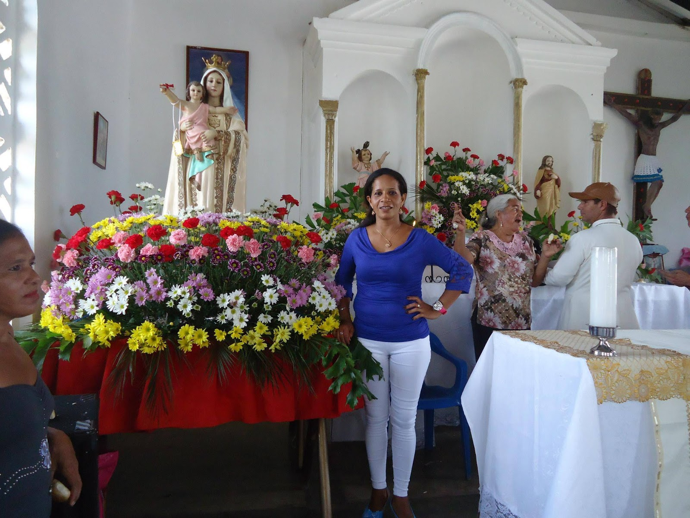

HISTORIA
SINGULARIDAD CERRITANA
Desde los iniciantes albores del siglo XIX y en las mismas narices de la Marquesa Torre de Hoyos, cierto número de pobladores de la zona de influencia de Barranco de Loba optaron por desarrollar asentamientos esporádicos en el contorno de la isla que forman el Brazo de Loba y el Brazo de Guayabal, con la intención de aprovechar las tierras bajas y los ecosistemas hídricos y humedales de la sabana que dicho accidente geográfico contiene, acción lógica que fue provocada por el mismo hato-hacienda que desde el 1° de marzo de 1637 había fundado allí el español Diego Ortiz Nieto, con explotación ganadera e implantación de la propiedad privada y del latifundio dominante en las Tierras de Loba inmersas en la Depresión Momposina, del cual dicha marquesa era la duodécima propietaria..
visita esta pagina problema de innundacion. La población de Los Cerritos, que entre otras cosas desde siempre ha sido denominada así porque allí existen varios cerros pequeños que se destacan del plano acuoso de la sabana, de los cuales el mayor es el que está a orillas del Brazo de Guayabal y que contiene el poblado, debió ser uno de los tantos pueblos fijos que conformaron una especie de Sistema Confederativo con las Provincias Indígenas de los Pocabuyes y de los Malibúes , como producto de las sociedades tribales integradas en el medio ambiente singular y uni-espacial de la Depresión Momposina. Así lo hacen pensar los vestigios de cerámica, piedras de moler, .
VEN Y DISFRUTA YO AMO CERRITO. ROJAS MORA, Jaime Eduardo. Proyecto de Investigación de la Historia Local de las Poblaciones P-N.R. P.N.R-COLCULTURA-Universidad de Cartagena. Comité de Apoyo Investigativo de Barranco de Loba. Barranco de Loba, 1990. Ibíd. La última Constitución Política vigente era la de 1843 que había ratificado la división política de la República de la Nueva Granada en Provincias, Cantones y Distritos Parroquiales que había dispuesto la de 1832. Fuente: Archivos de la parroquia Nuestra Señora de la Candelaria, Casa Cural, cabecera de Barranco de Loba. Esta sustancia histórica corresponde a la conjugación de: 1). RAMÍREZ ROMÁN, Orlando. “Mompox, génesis histórica: Los Primitivos”. Boletín Historial-Órgano de la Academia de Historia de Santa Cruz de Mompox. No. 22-23, mayo de 1991, y 2). RIVET, Paul. “Journal de la Societé des Americanistes”. Nouvelle Serie, XXXIV. París, 1947, traducido por el profesor David Ernesto Galindo .

POBLAMIENTO!
El alma viva omnitemporal de la Tradición Oral Cerritana permite conocer que las primeras posesiones de fincas en su proceso poblacional fueron las de los señores Manuel Rodríguez y Luis Vides. El primero había llegado a Barranco de Loba a finales del siglo XVIII proveniente de Mompós. Allí se había casado con Manuela Gallardo, una sirvienta momposina de la Marquesa María Josefa Isabel Torre de Hoyos, y se trasladó para su finca trayéndose a su cuñado Santos Gallardo que sería uno de los troncos genealógicos del futuro poblado. El segundo llegó de Pinillos, adonde había vivido proveniente de Magangué y sería otro tronco genealógico. Entre los finqueros posteriores estuvieron: Higinio Ardila (Hijo de un barranqueño), Santos Gallardo y Manuel Díaz (Otro tronco genealógico: Fue el papá de Calixto Díaz Calvo, abuelo de Lucas Díaz Mora, bisabuelo de Lucas Díaz Vides, Wilberto Díaz Ardila y otros). En ese entonces el cerro era aprovechado para apastar los ganados porque en la sabana peligraban ser víctimas de los tigres. Además de las posesiones de la fincas, al espacio donde se formó la población y por toda la banda izquierda del Brazo de Guayabal, llegaron y se asentaron familias de pescadores venidas de varias zonas del país por los mismos motivos de los primeros.
2.- Organización comunitaria: La organización de la comunidad como población fue producto del trabajo de evangelización de una orden religiosa católica proveniente de Mompox que visitó el paraje a comienzos del siglo XIX . A ella se integraron las familias de las fincas y de los pescadores que se habían apostado por ahí, en una amalgama cultural de santandereanos, momposinos, barranqueños, pinilleros, palomineros y magangueleños. Las primeras casas fueron construidas por donde sería la calle principal, siguiendo la falda del cerro mayor, bordeándolo en forma progresiva del noroeste hacia el suroeste, hasta lograr vencerlo por todos sus lados a excepción del norte pues lo ocupa el Brazo de Guayabal . 
Principales características
3.- Huellas en la organización estatal: La presencia de Los Cerritos en el ámbito administrativo departamental se halla registrada en los Anales del Estado Soberano de Bolívar ,aunque con la inestabilidad propia de ese ente que de por sí fue producto de una coyuntura política. Veamos, la Asamblea Legislativa: 1.- Mediante la Ley del 29 de octubre de 1870, reformatoria de la del 4 de mayo de 1865 y del 1° de diciembre de 1869 que reformó la del 3 de diciembre de 1868, dispuso en su artículo 1°: “… y se segregan las agregaciones del Cerrito y Las Conchitas del Distrito de Pinillos y se anexan al de Barranco de Loba”. 2.- A efectos de la Ley 37 del 15 de diciembre de 1873, adicional y reformatoria de la división territorial del 28 de noviembre de 1872, ordenó en su artículo 4°: “Segréganse del Distrito de Barranco de Loba los caseríos del Cerrito y Las Conchitas, y agregánse al Distrito de Pinillos, en la Provincia de Mompox”. 3.- En virtud de la Ley 19 del 30 de octubre de 1877, adicional y reformatoria de la división territorial, estableció en su artículo 5°: “Elimínase el Distrito de Hatillo de Loba que hace parte de la Provincia de Mompox, quedando sus caseríos repartidos y agregados de este modo: Hatillo de Loba, El Cerrito y Las Conchitas, al Distrito de Barranco de Loba…” Esta población siempre sufrió de inestabilidad jurisdiccional por razones políticas sustentadas en argumentaciones geográficas. Este el caso que acabamos de historiar, el mismo que se ha dado en los cambios que ha sufrido a través de las divisiones políticas municipales a partir de la Constitución Política de 1886: Ese año inició siendo corregimiento de Hatillo de Loba, poco después pasó a ser parte del municipio de Pinillos, pero a partir de 1975 fue integrada a la vida municipal de Barranco de Loba con su sustancia corregimental, en la administración de Ciro Antonio Salas Navarro . 4.- Rasgos Culturales: Esta comunidad tiene las mismas características culturales de las poblaciones lobanas originadas a partir de grupos aborígenes como lo son las del Triángulo de Loba formado por Barranco de Loba, Hatillo de Loba y San Martín de Loba, más El Peñón y Altos del Rosario, en el sentido en que muestran en sus actuaciones diarias la trietnicidad a través de todas sus manifestaciones de vida. Veamos algunas: a.- Actividades de subsistencia: En la misma razón de ser del cerritano está intrínseca su esencia cultural de individuo portador de los genes malibúes pues se debe al agua que lo rodea y le depara la comida a través de la pesca, y a la tierra que, al ser surcada por esa agua vitalizadora, lo provee del complemento de la alimentación mediante la agricultura, factores que corresponden a la Cultura Anfibia que dimensionó el Padre de la Sociología Colombiana, el maestro Orlando Fals Borda. Estas actividades aborígenes tradicionales las complementa con la pequeña ganadería que se fundió a nuestra cultura desde la implementación del gran hato-hacienda en las entrañas de la sabana barranqueña en 1637. De las dos primeras ocupaciones cotidianas se originaron las industrias de la producción de manteca de pescado, de manteca de corozo y de leche de higuerón, a mediados del siglo XX, las cuales fueron exterminadas por el cambio de las costumbres que ha implicado la modernidad. b.- La Tambora: Esta dimensión cultural folclórica que corresponde con mayor autenticidad a la conjugación de las tres etnias en América, hecho que conllevó al intelectual mexicano José Vasconcelos Calderón a filosofar su concepto de “Raza Cósmica”, en Los Cerritos se ha dado en la siguiente representación: En la época inicial, entre 1920 y 1950, se destacaron: Francisco Palencia, Flora Palencia, Guillerma Ardila, Francisco Javier Palencia, Catalina Rivera, Dominga Gudiño, Andrea Palencia, Carmen Palencia, Felipe Gudiño, Pabla Mora, Juan Manuel Rodríguez, Julián Mora, Julián Ardila y Juan Uriel que rompía el tambor macho con las manos mientras lo ejecutaba. En la época reciente, de 1950 en adelante, la trabajaron con especialidad: Pedro Julio Pianeta, Gerardo Mora, Ananías Rodríguez, Miguel Quiroz, Dominga Quiroz y Severiano Palencia (Tete), y más reciente: Diana Paba, Édier Cañas Mendoza, Mercedes Pérez e Ilva Pérez . c.- Otros componentes: También en esta población estuvo presente la Décima que significa la conjugación de la estructura de la poesía clásica española con los cantos de monte de la Región Caribe Colombiana y que ha llegado hasta nosotros gracias a la Tradición Oral, en la que hicieron sus producciones los poetas Andrés Ardila y Gabriel López. En lo concerniente a las creencias que tanto marcaron la época colonial y que aún perviven en los rincones populares de los campesinos como vestigios de la presencia africana, se destacó el brujo Manuel Díaz con alcance regional, y en la herbología que nos legaron nuestros ancestros aborígenes laboraron con fama los curanderos Andrés Ardila, Telésforo Pérez y también Manuel Díaz . 5.- Accidentes geográficos vitales: Si bien se ha demostrado hasta la saciedad que la Humanidad hace parte del ambiente pues de éste depende la vida de todos los seres de la naturaleza, en el caso de los cerritanos esta ley natural parece que toma significación especial por la forma como ese ambiente es la razón de su ser. Por este discernimiento es menester nombrar los principales accidentes geográficos que hacen parte de sus vidas: En los hídricos el más importante es el Brazo de Guayabal que lo baña por el noroccidente y que lo comunica con el Brazo de Loba, bajando hasta su desembocadura frente a la población de Santa Rosa, y subiendo hasta la Boca del río de La Victoria donde se bifurca de aquél. Las ciénagas hacen parte del ecosistema de la sabana que queda expedito al sureste, al sur y al suroccidente del pueblo y ellas son: La de Escubillal, La Jagua, La Tanga, El Tigre, Los Terneros, La Pelá, Las Piedras, Venturillita y La Estrella. Todas estas aún existen pero otras fueron extinguidas por la sedimentación natural ayudada por la que han causado los rompimientos del Brazo de Loba, de las cuales sólo quedan los nombres de La Ceiba, Guamalito, Venturilla y Quiquiná. En el seno de la sabana los accidentes hídricos forman algunas islas que se revisten de suma importancia: Quinquiná, El Palmar y De los Indios, y por último existen los puntos de la sabana que han estado y estarán para siempre en la consciencia mental ganadera, tanto de esta comunidad como de todas poblaciones de la Depresión Momposina. Helos aquí: Peralejo, El Guamo, Escubillal, María Angola, La Angostura, Los Venaos, Putumayo, Gallinazo, Los Perros, El Piñal y Playoncito . 6.- Panorámica de avances por sectores a.- Educación: La primera escuela fue construida bajo la orientación de dos maestros momposinos. Uno de los primeros educadores fue Luis Guillermo Vides Escobar, al que le seguirían la Seño Jóvita, Santiago Acosta, Elodia Campo, Manuela Donado, Digna Pupo y Esperanza Mora. En 1962 fueron construidas dos aulas escolares con recursos del departamento para la Escuela de Primaria, las cuales fueron ubicadas ya en el cerro mayor. Mediante Acuerdo Municipal 029 del 17 de noviembre de 1995 fue creado el Colegio Municipal de Bachillerato “Luis Guillermo Vides Escobar”, por gestión del concejal Euden Ardila Vides, inició labores en 1996 y graduó su Primera Promoción de Bachilleres en el 2001, año en que fue levantado su encerramiento. Entre 1996 y el 2000 fueron construidas 9 aulas, la Biblioteca y el Aula Máxima para la escuela. b.- Servicio de Agua: En 1983 fue construido el pozo perforado del acueducto corregimental, en 1984 las redes domiciliarias y fue puesto en servicio en 1987, todo por gestión de Rafael Pérez Martínez. c.- Salud: Antes de que existiera el Centro de Salud este sector estuvo en manos de médicos empíricos (Teguas) en las personas de Andrés Ardila, el Pastor Martínez (años 40), Villacoth Ángel (años 50-60), y de 1960 en adelante Jacinta Montero y Cristina Rangel Montero. En 1978 fue construido el Centro de Salud pero estuvo sin uso hasta 1997. Durante 1998 hubo algunas Brigadas de Salud provenientes del Hospital de Barranco de Loba. En el transcurrir de 1999 al 2000 atendían en el Centro de Salud médicos esporádicos como estrategia de proyección del mismo hospital y a partir del 2001 existe un médico permanente. d.- Servicio de energía eléctrica: El 29 de marzo de 1965 fue traída la primera planta eléctrica por gestión de las líderes Irmina Gandía y María de la Paz Mora ante el parlamentario conservador Joaquín Franco Burgos y la segunda fue conseguida por Representante a la Cámara liberal Alfonso López Cossio en 1989. A partir del 23 de septiembre de 1997 se puso al servicio la interconexión. e.- Religioso: El catolicismo imperó hasta los años 80, época a partir de la cual se organizaron grupos con otras formas de concebir el cristianismo: Los Trinitarios, los Testigos de Jehová y los Pentecostales. El patronato religioso católico fue iniciado con el Santo Cristo (14 de septiembre) pero a partir de la década de los años 50 se cambió por Nuestra Señora de las Mercedes (24 de septiembre). La iglesia fue construida en la cima del cerro mayor alrededor de 1952 por un maestro de construcción apellidado Galofre. f.- Mantenimiento: Como producto de la gestión del cerritano Lucas Díaz Vides en su condición de Alcalde Municipal de Barranco de Loba, cuyo periodo fue del 22 de julio del 2001 a la misma fecha del 2004, fueron construidas las murallas de contención a orillas del Brazo de Guayabal en el 2004..AGRICULTURA
FUENTE DE TRABAJO ALTO RENDIMIENTO.
LA PESCA
SU FUENTE PRINCIPAL DE ALIMENTO.
AYUDA DE LAS DIFERENETES GOBERNACIONES DE COLOMBIA ?
NO RECIBE AYUDA ECONOMICA Y INFRAESTRUCTURA.
PROBLEMAS
NUESTRO QUERIDO PUEBLO VIENE SUFRIENDO ACAUSA DE LA OLA IMBERNAL Y OTROS FACTORES.
{kind=link}
{kind=link}
{kind=link}
{kind=link}
{kind=link}
{kind=link}